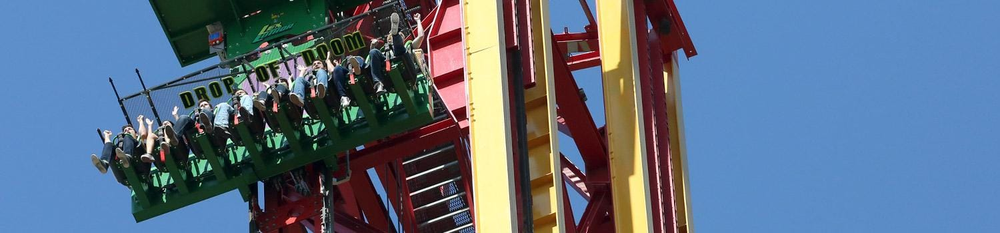

Press Release
Lex Luthor: Drop of Doom Debuts at Six Flags Magic Mountain
Towering at a world-record 400 feet, LEX LUTHOR: Drop of Doom was introduced at Six Flags Magic Mountain. Attached to both sides of the iconic SUPERMAN: Escape from Krypton tower, LEX LUTHOR: Drop of Doom, is considered an engineering phenomenon, dropping fearless riders in floorless gondolas at speeds up to 85 miles-per-hour in five seconds.
“We are excited to add another world-record ride to our existing collection of record-breaking attractions,” said Bonnie Rabjohn, Six Flags Magic Mountain Park President. “Six Flags is known as the industry leader in introducing innovative thrills and attractions, and Six Flags Magic Mountain, with more one-of-a-kind rides and attractions than any other theme park on the planet, is proud to expand our status as the Thrill Capital of the World.”
Celebrity guest Michael Rosenbaum, who played Lex Luthor for 10 years on CW’s long-running hit television series Smallville, was on-hand for the official launch of the first ride. Named after one of DC Comics’ most dangerously intelligent super-villains and Superman’s greatest enemy, unassuming guests enter LexCorp, a very large and powerful company that LEX LUTHOR uses as a front to finance his criminal organization. Inside LexCorp, guests view the suit LEX LUTHOR uses to fight Superman before they are summoned to board the ride. Once seated inside floorless gondolas on two vertical tracks flanking each side of the sky-scraping SUPERMAN: Escape from Krypton tower, passengers are pulled to the top of the tower, experience a brief pause before plummeting to Earth, all while the 100-mph SUPERMAN: Escape from Krypton cars are blasting backwards up the iconic tower at the same time. It’s the ultimate experience of good vs. evil.
Located next to LEX LUTHOR: Drop of Doom, park guests can test their skills and win prizes by shooting alien invaders with giant sling shots inside the new LexCorp Weapons Training Facility. Comic books, graphic novels, JUSTICE LEAGUE apparel and souvenirs can be found inside the new DAILY PLANET gift store, located as guests exit LEX LUTHOR: Drop of Doom.
Six Flags Magic Mountain is located north of Los Angeles in the Santa Clarita Valley and offers fun for the entire family. Voted the #1 Roller Coaster Theme Park in the World by Theme Park Insider, the theme park opens daily at 10:30 a.m.
Towering at a world-record 400 feet, LEX LUTHOR: Drop of Doom was introduced at Six Flags Magic Mountain today. Attached to both sides of the iconic SUPERMAN: Escape from Krypton tower, LEX LUTHOR: Drop of Doom, is considered an engineering phenomenon, dropping fearless riders in floorless gondolas at speeds up to 85 miles-per-hour in five seconds.
“We are excited to add another world-record ride to our existing collection of record-breaking attractions,” said Bonnie Rabjohn, Six Flags Magic Mountain Park President. “Six Flags is known as the industry leader in introducing innovative thrills and attractions, and Six Flags Magic Mountain, with more one-of-a-kind rides and attractions than any other theme park on the planet, is proud to expand our status as the Thrill Capital of the World.”